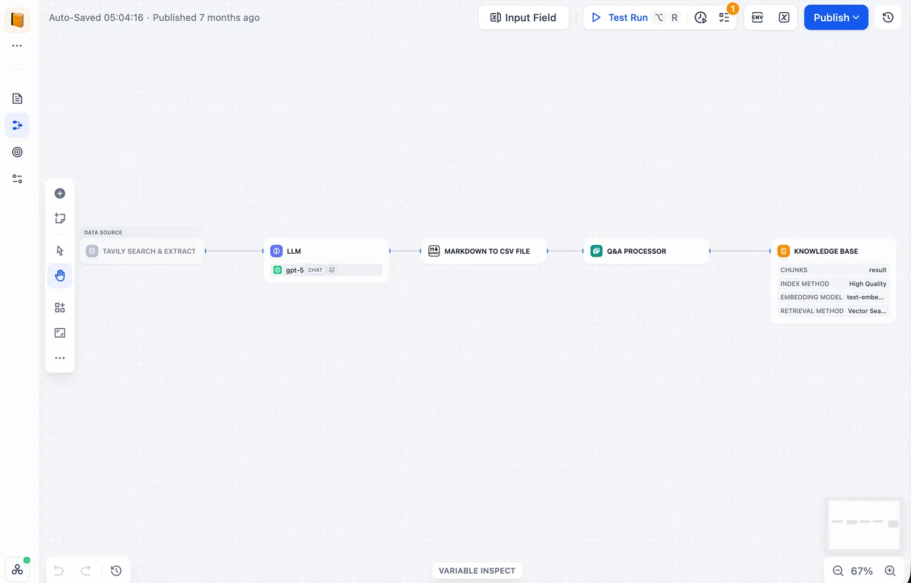

Dify Marketplace
技术伙伴合作指南
让开发者在 Dify 工作流中用上你的产品。
让开发者在 Dify 工作流中用上你的产品。
Marketplace
将模型、搜索工具或数据源接入 Dify，供开发者在自己的应用中调用。
发布一个可导入的工作流，附上配置步骤和示例输入，让用户自己试一次。

Workflow

模型根据任务生成下一轮要查的主题。
工作流按条件调用搜索插件，把结果存入变量。
推理模型读取收集到的材料，整理成回答。
知识流水线 / RAG

图中的流水线从 Tavily 读取资料，整理成问答片段，再写入知识库。
问答工作流检索与问题相关的片段，交给模型生成有依据的回答。
伙伴方案 / 试行
上架后验证需求。准备演示并记录基线，第 30 天复盘使用情况与用户反馈。
扩大已验证场景的使用。共同评审模板，发布教程或举办技术活动，再复盘转化。
围绕共同客户的需求打造旗舰方案。双方指定负责人，与客户验证后联合发布，持续跟踪成效。
C 档用于产品探索。A、B 档伙伴身份由双方确认。上架、认证和推荐分别审核。
B 档 / 合作示例
目标是让新用户用自己的文档跑通第一次问答。
提供插件、样本文档、配置说明和维护联系人，让另一位开发者独立跑通。
共同评审后，选择发布一篇教程或举办一场演示，提前敲定负责人、渠道和日期。
找出用户在哪一步遇到困难，改进模板或教程，约定下一轮要验证的问题。
合作成效
记录安装或导入的工作区。
例如，模板首次检索到样本文档中的目标段落。
在后续观察期内，查看已激活的工作区是否再次使用。
上线前约定成功事件、基线和观察周期。每个新增激活工作区只计一次，排除内部测试、机器人及异常流量。
可申请推荐位。30 天是探索验证周期，实际展示位置和天数以确认的排期为准。
申请合作
提供产品链接、目标用户、使用场景和已有反馈。
附上工作流或模板、输入样例、预期输出，以及维护联系人。
进入 Partners 区域，选择 Become a Partner。